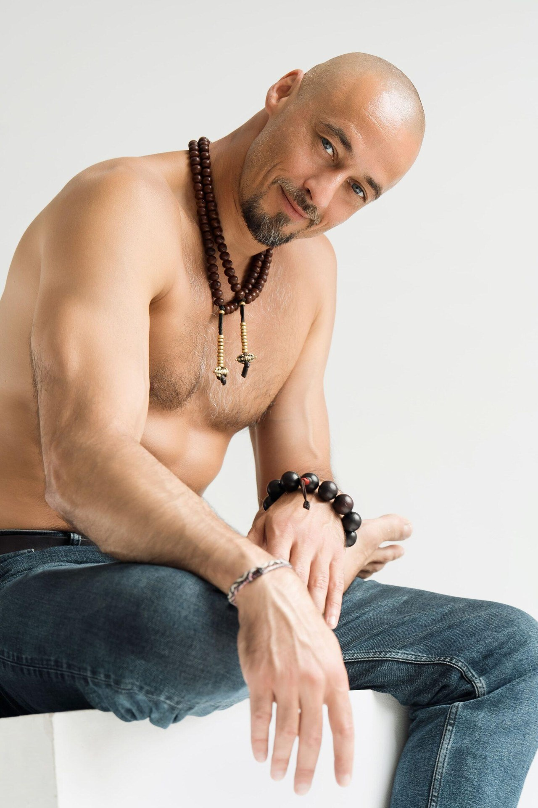
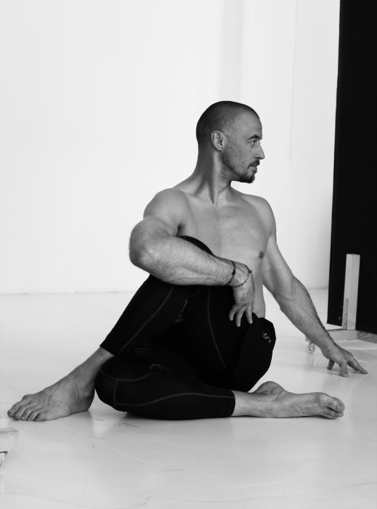
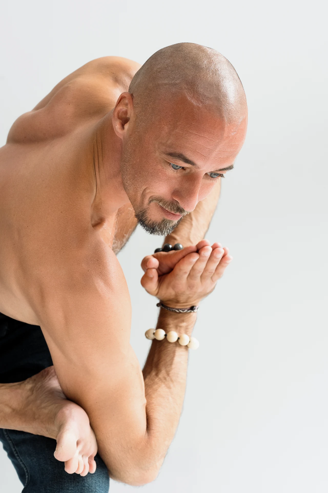
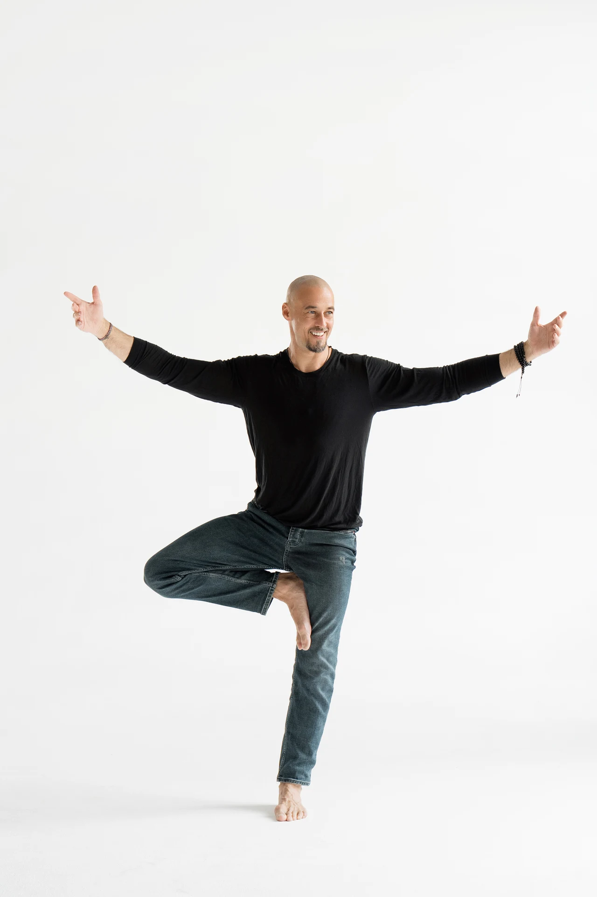
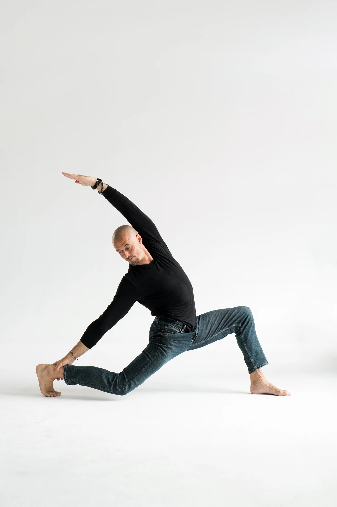

Как вы двигаетесь
Разобраться в привычных движениях: больше внимания к качеству движения, а не к достижению условного результата.
АВТОРСКИЙ КУРС ИЛЬИ БАРИНОВА / ОНЛАЙН / СТАРТ 22 НОЯБРЯ
Точка опоры · Тело
Четыре недели практики, чтобы лучше понимать своё тело: находить подвижность там, где её не хватает, и устойчивость там, где она нужна. Уверенность в движении — уверенность в жизни.

01 / О КУРСЕ
Это курс для тех, кто хочет двигаться осознаннее — независимо от опыта йоги и уровня гибкости.
Будем разбираться, как взаимодействуют разные части тела, замечать привычные компенсации и подбирать посильный вариант движения.
Что будем изучатьРазобраться в привычных движениях: больше внимания к качеству движения, а не к достижению условного результата.
Соединить подвижность и стабильность в понятной, доступной практике.
Найти варианты, к которым можно возвращаться в обычной жизни.
02 / ДЛЯ КОГО
Для тех, кто хочет двигаться свободнее в повседневной жизни, на тренировках и в йоге. Предыдущий опыт занятий не обязателен.
03 / ПРОГРАММА
Занятия можно проходить последовательно и возвращаться к нужной теме. В каждой записи — объяснение и практика.
Устойчивый центр: таз, корпус и опора без лишнего напряжения.
Свобода движения и дыхания: повороты, разгибание и работа грудной клетки.
Чувство лёгкости: замечаем лишнее напряжение и связь шеи с плечами и грудной клеткой.
Подвижность и сила: опора и движение без форсированной растяжки.
Улучшение функциональности: как взаимодействуют лопатки, плечи и грудная клетка.
Создание гармоничного состояния: соединяем принципы в практику для всего тела.

04 / ПОДХОД
Фотографии Ильи из практики: внимание к положению тела, равновесию и опоре. На занятиях он подробно объясняет принципы движения.



Свободное тело — не обязательно самое гибкое.
В нём сочетаются подвижность там, где она нужна, и устойчивость там, где требуется опора.
06 / ФОРМАТЫ УЧАСТИЯ
Все форматы включают четыре недели курса, шесть записанных практик, три живые лаборатории и финальную онлайн-практику.
01 / ОНЛАЙН
24 900 ₽
ВСЁ НЕОБХОДИМОЕ ДЛЯ ПРАКТИКИ
02 / ОНЛАЙН + ОЧНО
29 900 ₽
С ОЧНОЙ ОТРАБОТКОЙ
03 / ТЕЛО + ЦИГУН
49 900 ₽
ДВА НАПРАВЛЕНИЯ ПРАКТИКИ
Старт 22 ноября 2026. Условия оплаты и расписание живых встреч сообщим при записи.
07 / ВОПРОСЫ
Если вашего вопроса нет в списке, напишите нам — поможем разобраться.
Задать вопрос в TelegramДа. Не нужно быть гибким или раньше заниматься йогой. Вы сможете подбирать посильные варианты движений.
Да. Вы сможете по-новому посмотреть на знакомые положения: где вы двигаетесь свободно, а где компенсируете одной зоной другую.
Нет. Цель курса — не стать самым гибким. Мы учимся сочетать доступную подвижность с устойчивостью и подбирать амплитуду под своё тело.
Да, базовый тариф проходит полностью онлайн. Очная отработка в Санкт-Петербурге входит в тарифы «Проф» и «Проф + цигун».
Шесть основных практик доступны в записи: 2 месяца в базовом тарифе и 4 месяца в «Проф» и «Проф + цигун». Их можно проходить в удобное время. Возможность просмотра записей трёх живых лабораторий и финальной встречи уточните у организаторов перед оплатой.
Старт — 22 ноября 2026 года, курс длится четыре недели. Шесть практик в записи можно проходить в удобное время. Точные даты живых встреч и очной отработки сообщим перед стартом.
Курс обучает движению и не заменяет медицинскую помощь. При боли, травмах, хронических состояниях или других ограничениях обсудите нагрузку с лечащим специалистом и сообщите об ограничениях организаторам.
Всё из тарифа «Проф»: очная отработка в зале Санкт-Петербурга, сертификат и доступ к записям «Тела» на 4 месяца. Плюс отдельный курс цигун «Путь карпа» из 15 модулей. Срок доступа к нему сообщим при записи.
08 / СЛЕДУЮЩИЙ ШАГ
Выберите формат и расскажите, как с вами связаться. Ответим на вопросы об участии и уточним ближайшее расписание.